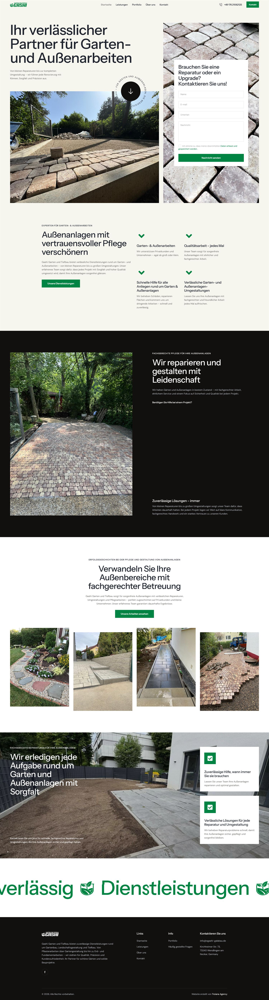
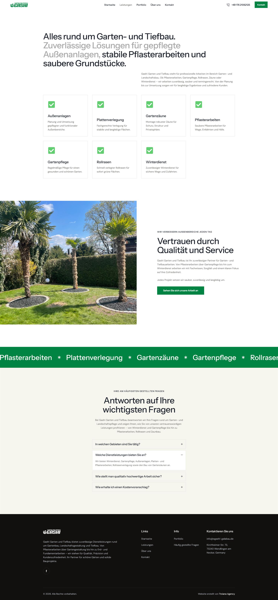
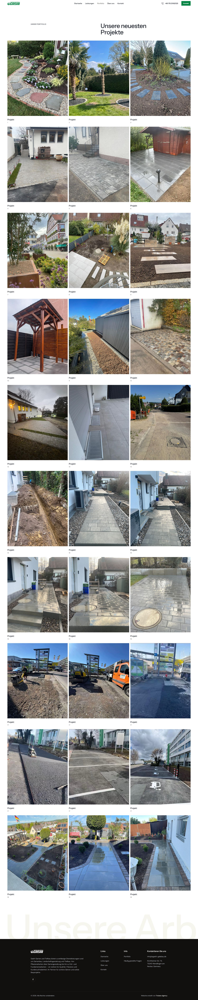
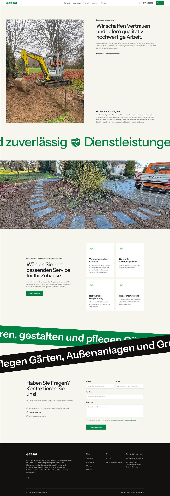
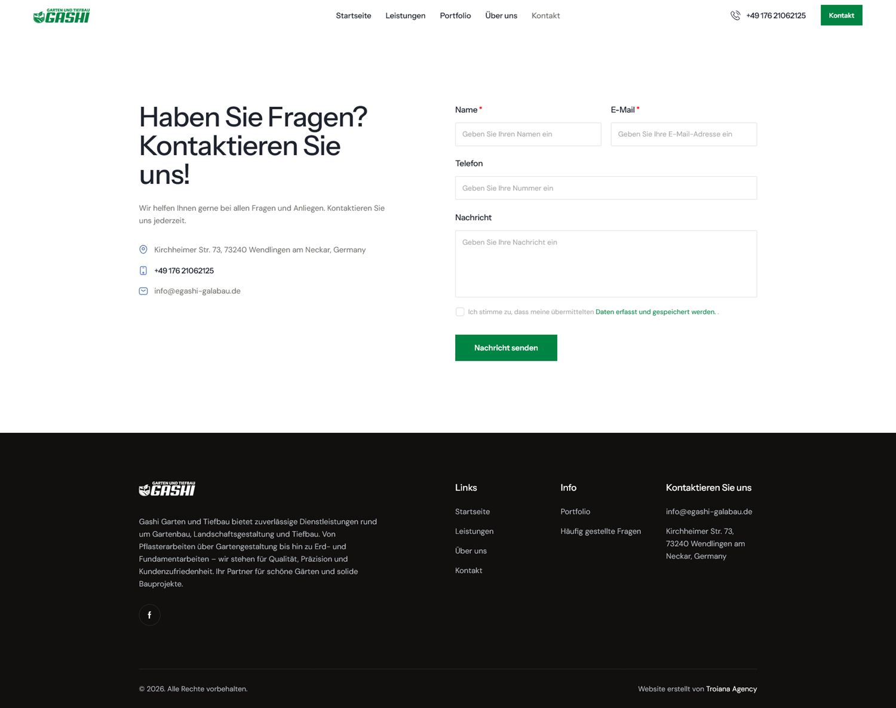

Client
Gashi Garten und Tiefbau
A confident website for a garden and groundworks company — "your reliable partner for garden and outdoor work" — built to win trust and generate local enquiries.

Open full ↗Gashi Garten und Tiefbau handles everything around gardens and outdoor spaces — from design and planting to maintenance and groundworks (Tiefbau). The goal was a professional online presence that communicates reliability and care, and makes it simple for customers to request work.
We built a clean, fast, mobile-first site that presents the services clearly and drives enquiries.
Clear sections for garden design, outdoor-area construction, maintenance and groundworks so prospects instantly grasp the offering.
Messaging built around being a dependable, attentive partner — reassuring for homeowners and property managers alike.
Prominent contact calls-to-action that make starting a project effortless.
Performance-minded build with local SEO foundations to help the company get found.

Open ↗
Open ↗
Open ↗
Open ↗We build fast, conversion-focused websites for local businesses. Tell us about your project.